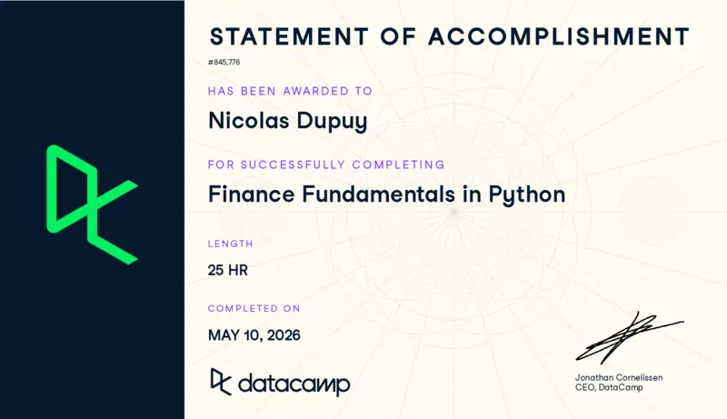
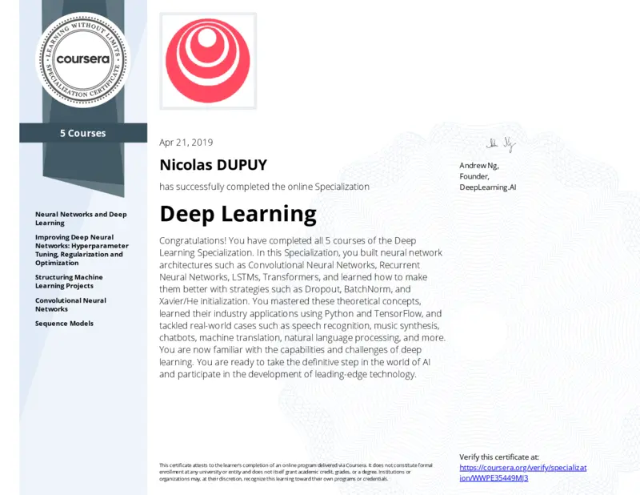

Bonjour, je suis Nicolas, chercheur indépendant et enseignant en science des données. J'ai divisé cette page en deux sous-sections, Académique et Divers, du mieux que j'ai pu compte tenu de mon parcours très non linéaire.
Bienvenue ! Une première note sur cette Beta-preview.
Ce site donne un aperçu de mes services de R&D numérique. Ma priorité actuelle étant de signaler ma disponibilité, j'ai conçu une première version sujette à amélioration.
Alors qu'on parle beaucoup des capacités de niveau PhD des outils IA, je dispose moi-même de capacités PhD sous-utilisées, et je souhaite les mettre à contribution. Le neuroatypisme ayant été mon principal obstacle aux parcours traditionnels, j'ai structuré un mode de fonctionnement adapté à mon profil du spectre de l'autisme, qui élimine les frictions classiques grâce à un travail principalement asynchrone, des tâches administratives déléguées au portage salarial, et des paiements conditionnés par milestone.
Je travaille avec deux niveaux d'énergie (bas et haut), alors mes services couvrent un spectre de complexités différentes. Lorsque je suis mentalement épuisé pour des recherches exigeantes, je peux toujours m'attaquer à vos retards de traitement de données. Il y a toujours quelque chose que je peux traiter pour accélérer votre travail.
J'affinerai ce site au fil du temps pour le rendre plus humain, mieux expliqué, et pour y inclure une section plus personnelle. Travaillant sous deux régimes d'énergie, je développe aussi cette plateforme avec deux niveaux de raffinement correspondants. L'humaniser lentement en partageant mes passions est, pour moi, un moyen de recharger mon énergie tout en échangeant avec des pairs intellectuellement curieux.
Philosophie de mon initiative
Je suis Nicolas, le chercheur indépendant qui gère ce service de support en recherche et science des données.
Je propose un menu modulaire de services, de la recherche scientifique à la science des données, offrant un soutien externe pour les tâches que votre équipe doit déléguer.
J'ai construit cette structure autour d'un système de tickets inspiré de l'ingénierie logicielle, conçu pour s'adapter à mes limites de charge de travail fluctuantes en tant que chercheur dans le spectre de l'autisme. Le paiement s'effectue à la livraison de milestones par le biais de portage salarial, rendant toute la collaboration plug-and-play.
En détail :
Ce que je fais en quelques lignes :
- Résolution de projets laissés en arrière plan & tâches d'ingénierie en retard : Je prends en charge vos charges de travail accumulées en recherche et science des données. Cela inclut l'exploration d'hypothèses secondaires laissées de côté ou l'extension de la capacité de votre équipe pour des travaux informatiques urgents. J'interviens en tant que chercheur indépendant de manière agnostique vis-à-vis du domaine.
- Milestones basées sur la valeur : Nous décomposons ensemble la feuille de route technique en tickets de projet, en attribuant une valeur fixe et des délais estimés à chaque milestone. À partir de là, je gère mon emploi du temps en toute autonomie. Nous restons informés par des mises à jour asynchrones, éliminant les réunions formelles superflues.
- Exécution adaptive : Je gère des flux de travail allant de l'exploration de données de base à des simulations numériques spécialisées ou de l'exploration théorique. Mon rythme de travail s'adapte à ma disponibilité cognitive, canalisant mes pics de concentration sur des recherches mathématiques complexes tout en déployant des traitements de données linéaires pour maintenir une dynamique régulière.
La recherche comme passion : Il y a des années, je ne pensais pas pouvoir devenir chercheur, malgré un bon parcours universitaire. Je suis resté à l'université parce que j'aimais apprendre, et j'ai finalement obtenu une opportunité de doctorat. Soutenir des équipes techniques est ma façon de m'associer à d'excellents chercheurs sur des projets stimulants, me permettant de continuer à apprendre tout en contribuant à leurs progrès, et d'aller au-delà de mes études doctorales.
Tirer parti de ma dynamique d'apprentissage : Je suis un bibliophile académique. C'est principalement par les livres que j'ai étudié : j'ai travaillé comme enseignant à domicile, puis j'ai acheté des piles de manuels et de livres de recherche. Je ne me suis jamais arrêté. Aujourd'hui, avec les contenus numériques d'institutions historiques comme le Collège de France ou Stanford, ma liste d'études est plus longue qu'une liste de Noël (j'appelle ma liste de chose à étudier ma liste de Noël). La concentration intense associée à l'autisme n'est pas une légende. Quand je développe une obsession, je ne fais pas les choses à moitié. Cela me donne l'élan nécessaire pour accomplir un travail de haute qualité et ciblé sur de longues durées.
Dynamique interdisciplinaire : Contrairement aux trajectoires de recherche conventionnelles qui imposent une spécialisation extrême au sein d'un seul domaine, j'aime explorer plusieurs disciplines. Alors que ce serait une contrainte dans un poste académique permanent, ma structure indépendante transforme ce besoin de variété en un atout. Elle me permet d'appliquer mes compétences mathématiques de manière agnostique dans divers secteurs, en transférant des outils analytiques entre la finance, la médecine, la physique théorique et les pipelines de données appliquées.
« Les troubles du spectre autistique (TSA) constituent un groupe diversifié de pathologies. Ils se caractérisent par un certain degré de difficulté dans l'interaction sociale et la communication. D'autres caractéristiques sont des modes d'activité et de comportement atypiques, comme des difficultés de transition d'une activité à une autre, une attention portée aux détails et des réactions inhabituelles aux sensations », selon l'OMS, qui estime la prévalence à environ 1 sur 127 dans la population mondiale.
Qu'en est-il dans le milieu académique ? Bien qu'il n'existe pas de statistiques de recensement global direct sur la prévalence au sein de l'université, Simon Baron-Cohen a publié en 2001 un article mesurant le Quotient du Spectre Autistique moyen à travers différentes populations. Sur une échelle de 0 à 50, où la population générale obtient une moyenne de 16,4 (± 6,4) et la population autiste diagnostiquée cliniquement obtient une moyenne de 35,8 (± 6,5), les étudiants en mathématiques ont obtenu un score de 21,5 (± 6,5), légèrement inférieur à celui de 16 lauréats d'olympiades britanniques (24,5 ± 5,7).
En ce qui concerne l'autisme au travail, les données d'organisations spécialisées comme la National Autistic Society et l'Office for National Statistics (ONS) au Royaume-Uni révèlent que l'autisme présente le taux d'emploi le plus bas parmi toutes les catégories de handicap, avec seulement environ 21,7 % des adultes autistes occupant un emploi valorisant (données de 2020), juste en dessous des adultes présentant des difficultés d'apprentissage sévères.
Pourtant, le spectre de l'autisme couvre un large éventail de situations et de niveaux intellectuels. Le Dr Neil Kenny a recueilli de précieux témoignages d'universitaires dans l'enseignement supérieur irlandais (« Tell me what my job is »: A Qualitative Exploration of the Experiences of Autistic Academic Staff working in Higher Education in Ireland), et je peux y ajouter le mien. Si vous le lisez, voici quelques thèmes abordés :
- Recevoir un diagnostic libère d'un poids important : En effet, pour moi, c'était comme être un lapin qui a atterri par accident dans une famille de chats, et à qui on dit enfin que, même s'il les aime, de légères adaptations comme s'abstenir de chasser les oiseaux ou de vagabonder la nuit rendraient sa vie bien meilleure.
- La perception du temps est radicalement différente entre les personnes neurodivergentes et neurotypiques, et même entre deux personnes autistes. Dans l'étude, un participant décrit être capable de se concentrer sur une seule tâche pendant des heures sans se rendre compte que le temps passe, tandis qu'un autre a besoin de pauses plus souvent que ses collègues. Je suis pile au milieu de cela : j'adorais les compétitions d'échecs à 17 ans, avec des parties d'une journée commençant à 9h du matin qui pouvaient durer jusqu'à 8 heures. J'ai tenté l'un des concours d'entrée les plus difficiles de l'École Normale Supérieure (ENS) ; n'ayant pas suivi le parcours traditionnel, j'ai eu de terribles résultats, mais j'ai profondément apprécié le défi. Pourtant, même pour une tâche pour laquelle j'excelle, si mon esprit est embrumé par des pensées toxiques, ma perception du temps s'inverse complètement.
- Routines et organisation : Nous avons tous nos propres routines, et l'organisation peut être chaotique. Pour moi, le multitâche est comme essayer de jongler avec plusieurs massues, et le simple fait d'avoir deux échéances, même très éloignées, peut me figer complètement.
- Le masquage (masking) : Pour en revenir au fait d'être un lapin au milieu de la famille de chats qui vous a adopté. Vous les aimez, vous voulez passer du temps et faire des choses avec eux, mais ils ont des instincts que vous n'avez pas. Vous essayez donc de faire de même via un mécanisme de copie inconscient, mais votre esprit vous crie qu'il souffre. C'est souvent la cause principale d'épuisement, menant au burn-out.
- Surcharge sensorielle : Je l'ajoute comme une cause critique d'épuisement et de burn-out. Fatigué dans les espaces publics bondés, les annonces répétées en attendant un train, les retours de flamme de moteurs ou les bips des scanners aux caisses de supermarché forcent notre cerveau à travailler en permanence, comme si nous traitions activement des données.
- Davantage en retour pour nos difficultés : Certes, être autiste rend la vie compliquée, mais je ne voudrais pour rien au monde être différent. Les participants à l'étude louent leur hyperconcentration et leur motivation à approfondir leurs passions. Moi non plus, je ne voudrais jamais perdre la joie d'apprendre des choses logiques avec une telle intensité.
Services
🌱 Phase de lancement : vos retours sont importants pour mieux répondre à vos besoinsVous trouverez ici la liste de mes services, que je pourrai étendre au fil du temps lorsque je commencerai à étudier de nouveaux sujets. Ils sont conçus principalement pour vous apporter des compétences que j'ai développées par un apprentissage continu au fil des ans, à travers de multiples parcours universitaires.
Pour garantir une collaboration prévisible, hautement professionnelle et sans stress pour chacun d'entre nous, j'applique un cadre constant sur la plupart de ces modules :
💼 Facilité administrative
Utilisation native d'une entreprise de portage salarial (EOR) pour gérer tous les contrats, factures et la conformité.
✅ Jalons sans risque
Le paiement intervient strictement après validation des jalons, en s'inspirant du fonctionnement par tickets et backlogs des entreprises informatiques modernes.
📥 Déchargement de backlog
Conçu spécifiquement pour absorber vos retards de traitement de données et vos hypothèses secondaires, vous déchargeant des tâches que votre équipe principale n'a pas le temps d'exécuter.
🧩 Rythme cognitif adapté
Large éventail de complexités, des tâches juniors à la recherche approfondie. Cela me permet, en tant que chercheur sur le spectre de l'autisme, de gérer mon temps et ma charge cognitive selon ma capacité de concentration actuelle.
Calcul scientifique & Simulation numérique
Soutien technique et théorique pour l'exploration, l'implémentation de code, les simulations de systèmes physiques et la modélisation mathématique. Livré principalement à distance, avec des contributions sur site optionnelles.
Les projets sont structurés en jalons indépendants avec des définitions et des livrables clairs, garantissant que chaque livrable peut être facilement suivi et intégré par n'importe quel membre de l'équipe.
Les jalons peuvent être une exploration théorique ou une implémentation d'algorithme, et constituent la base des éléments facturés à la fin, ce qui protège votre budget. Le prix est convenu pour chaque jalon et ne change pas si j'ai besoin de temps supplémentaire, vous offrant stabilité et prévisibilité, tout en m'apportant une pression réduite et l'opportunité de consacrer du temps d'apprentissage de qualité.
Cette structure est conçue pour aider les équipes ou les chercheurs à libérer leurs projets secondaires en attente et à évaluer des hypothèses alternatives pendant que vos équipes principales se concentrent sur leurs projets prioritaires.
Des partenariats à long terme peuvent être envisagés pour sécuriser les avantages de ma courbe d'apprentissage, car j'apprends activement les méthodes numériques au niveau de la recherche d'entrée.
Chimie quantique & Modélisation des matériaux
Modélisation moléculaire, calculs de structures électroniques ou géométriques et simulations quantiques pour les états fondamentaux et excités, y compris les flux de travail DFT et Quantum Monte Carlo. Livré principalement à distance, avec des contributions sur site optionnelles.
Les projets sont structurés en jalons indépendants avec des définitions et des livrables clairs, garantissant que chaque livrable peut être facilement suivi et intégré par n'importe quel membre de l'équipe.
Les jalons peuvent être simplement une optimisation DFT de structure électronique (dans un lot de molécules à explorer) ou l'exploration théorique de méthodes alternatives, et constituent la base des éléments facturés à la fin, ce qui protège votre budget. Le prix est convenu pour chaque jalon et ne change pas si j'ai besoin de temps supplémentaire, vous offrant stabilité et prévisibilité, tout en m'apportant une pression réduite et l'opportunité de consacrer du temps d'apprentissage de qualité.
Cette structure est conçue pour aider les équipes ou les chercheurs à libérer leurs projets secondaires en attente et à évaluer des hypothèses alternatives pendant que vos équipes principales se concentrent sur leurs projets prioritaires.
Des partenariats à long terme peuvent être envisagés pour sécuriser les avantages de ma courbe d'apprentissage, car j'adapte activement mes flux de travail de calcul existants à vos problèmes de recherche spécifiques.
Note personnelle
J'ai effectué mon doctorat (2012-2016) en physique numérique, en me concentrant sur l'optimisation par Quantum Monte Carlo de molécules de type graphène, les structures électroniques de l'état fondamental, les états excités singulet/triplet et la géométrie des systèmes fortement corrélés. Bien que je n'aie pas encore déployé de pipelines de dynamique moléculaire ni intégré l'apprentissage automatique dans les flux de travail de physique traditionnels, je suis impatient d'apprendre, d'implémenter et d'adapter ces méthodes pour vos projets. Au-delà de ma passion pour la physique, j'ai développé un intérêt précoce pour le calcul quantique. J'ai complété les programmes de certification professionnelle 'Quantum Computing Fundamentals' et 'Quantum Computing Realities' de MITxPRO, et je suis impatient de contribuer au développement de ce domaine.
Méthodes numériques en finance quantitative
Implémentation et validation de modèles numériques, de simulations stochastiques et de structures mathématiques pour la finance quantitative. Livré principalement à distance, avec des contributions sur site optionnelles.
Les projets sont structurés en jalons indépendants avec des définitions et des livrables clairs, garantissant que chaque livrable peut être facilement suivi et intégré par n'importe quel membre de l'équipe.
Les jalons peuvent être une estimation de Value-at-Risk (VaR), un lot de données à préparer, concevoir ou analyser, ou un modèle théorique à explorer, et constituent la base des éléments facturés à la fin, ce qui protège votre budget. Le prix est convenu pour chaque jalon et ne change pas si j'ai besoin de temps supplémentaire, vous offrant stabilité et prévisibilité, tout en m'apportant une pression réduite et l'opportunité de consacrer du temps d'apprentissage de qualité.
Cette structure est conçue pour aider les équipes ou les chercheurs à libérer leurs projets secondaires en attente et à évaluer des hypothèses alternatives pendant que vos équipes principales se concentrent sur leurs projets prioritaires.
Des partenariats à long terme peuvent être envisagés pour sécuriser les avantages de ma courbe d'apprentissage, car je me spécialise activement dans les méthodes de finance quantitative, en m'appuyant sur mon parcours de recherche quantitative.
Note personnelle
J'ai commencé à me spécialiser activement dans les méthodes de finance quantitative l'année dernière, en m'appuyant sur sept ans d'enseignement de la science des données à la Paris School of Business en contact étroit avec des professionnels de la finance. Mon prochain jalon personnel est de collaborer avec des chercheurs et praticiens actifs pour me former par la pratique. S'associer permet de former un collaborateur à long terme qui comprendra profondément votre environnement. Compte tenu de la rareté des profils quantitatifs solides sur le marché actuel, ce partenariat vous permet d'éviter la recherche difficile de profils diplômés rares et de vous assurer un chercheur de niveau PhD avec une maturité analytique éprouvée. J'accepte volontiers des tâches d'entrée de gamme tout en apprenant les bases, et en tant qu'enseignant chevronné, je peux également contribuer à former vos stagiaires grâce à mes connaissances fraîchement acquises. Me positionnant à l'interface entre chercheurs et praticiens, n'hésitez pas à me contacter si vous avez besoin d'un connecteur. Je concentre mes contributions européennes sur la France, mon pays d'origine, ainsi que sur les pays nordiques et baltes, qui sont mes régions préférées.
Optimisation convexe & Programmation mathématique
Formulation et résolution de problèmes d'optimisation (tels que LP, QP, SOCP, SDP) sous contraintes physiques ou opérationnelles. Livré principalement à distance, avec des contributions sur site optionnelles.
Les projets sont structurés en jalons indépendants avec des définitions et des livrables clairs, garantissant que chaque livrable peut être facilement suivi et intégré par n'importe quel membre de l'équipe.
Les jalons peuvent être la traduction de contraintes physiques ou opérationnelles dans un modèle de programmation convexe, ou une suite de benchmarks comparant différents solveurs sur un jeu de données, et constituent la base des éléments facturés à la fin, ce qui protège votre budget. Le prix est convenu pour chaque jalon et ne change pas si j'ai besoin de temps supplémentaire, vous offrant stabilité et prévisibilité, tout en m'apportant une pression réduite et l'opportunité de consacrer du temps d'apprentissage de qualité.
Cette structure est conçue pour aider les équipes ou les chercheurs à libérer leurs projets secondaires en attente et à évaluer des hypothèses alternatives pendant que vos équipes principales se concentrent sur leurs projets prioritaires.
Des partenariats à long terme peuvent être envisagés pour sécuriser les avantages de ma courbe d'apprentissage, car je perfectionne continuellement ma maîtrise pratique à travers les frameworks de Stephen Boyd.
Note personnelle
Je n'ai commencé à étudier l'optimisation convexe que récemment comme une extension de mon intérêt pour les méthodes numériques. Je prends les cours publics et le manuel de Stephen Boyd comme point de départ, ainsi que les notes de cours algorithmiques de Yang Zheng et l'ouvrage classique de Ben-Tal et Nemirovski, *Lectures on Modern Convex Optimization*. S'associer tôt permet de s'assurer un contributeur à l'optimisation de plus en plus spécialisé pour modéliser vos goulots d'étranglement opérationnels et physiques. Si vous avez besoin d'une expertise que je ne possède pas encore, n'hésitez pas à m'en informer afin de fixer des objectifs d'acquisition de compétences, afin que je puisse vous aider à réaliser des tâches où vous manquez de main-d'œuvre qualifiée.
Recherche en vision par ordinateur
Soutien technique et théorique pour le développement d'algorithmes de vision par ordinateur, de fondements mathématiques et d'implémentations numériques, couvrant les approches géométriques classiques, les architectures d'apprentissage automatique et les modèles génératifs. Livré principalement à distance, avec des contributions sur site optionnelles.
Les projets sont structurés en jalons indépendants avec des définitions et des livrables clairs, garantissant que chaque livrable peut être facilement suivi et intégré par n'importe quel membre de l'équipe.
Les jalons peuvent aller d'une tâche de traitement d'image de base ou de l'implémentation algorithmique d'un papier de recherche, à un audit mathématique d'une structure théorique, et constituent la base des éléments facturés à la fin, ce qui protège votre budget. Le prix est convenu pour chaque jalon et ne change pas si j'ai besoin de temps supplémentaire, vous offrant stabilité et prévisibilité, tout en m'apportant une pression réduite et l'opportunité de consacrer du temps d'apprentissage de qualité.
Cette structure est conçue pour aider les équipes ou les chercheurs à libérer leurs projets secondaires en attente et à évaluer des hypothèses alternatives pendant que vos équipes principales se concentrent sur leurs projets prioritaires.
Des partenariats à long terme peuvent être envisagés pour sécuriser les avantages de ma courbe d'apprentissage, car j'adapte rapidement mes compétences mathématiques à vos problèmes de vision spécifiques.
Note personnelle
J'ai découvert la vision par ordinateur après l'essor du deep learning, et ses mathématiques sous-jacentes m'ont rapidement fasciné. J'ai suivi en ligne la première année du programme de Master en vision par ordinateur de l'Université HSE (interrompu par le déclenchement de la guerre en Ukraine) et j'ai complété le cours sur les modèles génératifs CS236 de Stanford en 2021. Je suis tout aussi passionné par les méthodes classiques qui exploitent les mathématiques fondamentales que par les méthodes issues de l'apprentissage automatique. Pour référence, certains manuels que je consulte dans ma pratique incluent *Computer Vision: Algorithms and Applications* de Szeliski et *Digital Image Processing* de Gonzalez & Woods. De plus, mon parcours universitaire comprend différents niveaux de géométrie différentielle – notamment riemannienne, symplectique et les groupes de Lie – ce qui m'apporte une perspective géométrique solide lors de travaux sur des données visuelles de grande dimension ou des architectures invariantes.
Applications de vision par ordinateur
Mise en œuvre pratique de flux de travail de vision par ordinateur pour l'automatisation industrielle, le contrôle qualité et le prétraitement des données, à l'aide de modèles classiques de traitement d'images et d'apprentissage automatique. Livré principalement à distance, avec des contributions sur site optionnelles.
Les projets sont structurés en jalons indépendants avec des définitions et des livrables clairs, garantissant que chaque livrable peut être facilement suivi et intégré par n'importe quel membre de l'équipe.
Les jalons peuvent aller de la construction d'un pipeline de prétraitement OpenCV pour le filtrage et l'alignement d'images à l'écriture d'un script personnalisé de correspondance de caractéristiques ou au déploiement d'un modèle pré-entraîné léger, et constituent la base des éléments facturés à la fin, ce qui protège votre budget. Le prix est convenu pour chaque jalon et ne change pas si j'ai besoin de temps supplémentaire, vous offrant stabilité et prévisibilité, tout en m'apportant une pression réduite et l'opportunité de consacrer du temps d'apprentissage de qualité.
Cette structure est conçue pour aider les équipes ou les chercheurs à libérer leurs projets secondaires en attente et à évaluer des hypothèses alternatives pendant que vos équipes principales se concentrent sur leurs projets prioritaires.
Des partenariats à long terme peuvent être envisagés pour sécuriser les avantages de ma courbe d'apprentissage, car j'enrichis activement ma boîte à outils pratique avec des bibliothèques logicielles de niveau industriel.
Note personnelle
Bien que principalement théoricien, je m'efforce activement de devenir un praticien de la vision par ordinateur depuis cinq ans. J'ai commencé par suivre des cours d'introduction à la vision par ordinateur sur des plateformes comme Coursera, Udacity et LearnOpenCV, avant d'accélérer ma formation en m'inscrivant au programme de Master en ligne de l'Université HSE – un effort malheureusement interrompu par le déclenchement de l'invasion de l'Ukraine. Je propose ces services pour compléter mes connaissances théoriques par une expérience pratique, en structurant ma contribution comme un service de soutien pour résorber vos retards de développement, où votre risque financier est entièrement éliminé par des paiements basés sur des jalons.
Ingénierie de données & Reporting
Développement de pipelines de traitement de données, de tableaux de bord décisionnels et d'audits de qualité des données. Livré principalement à distance, avec des contributions sur site optionnelles.
Les projets sont structurés en jalons indépendants avec des définitions et des livrables clairs, garantissant que chaque livrable peut être facilement suivi et intégré par n'importe quel membre de l'équipe.
Les jalons peuvent aller de l'écriture d'un script Python personnalisé pour nettoyer et unifier différents jeux de données à la rédaction de requêtes SQL dans Google BigQuery, ou à la construction d'un tableau de bord automatisé, et constituent la base des éléments facturés à la fin, ce qui protège votre budget. Le prix est convenu pour chaque jalon et ne change pas si j'ai besoin de temps supplémentaire, vous offrant stabilité et prévisibilité, tout en m'apportant une pression réduite et l'opportunité de consacrer du temps d'apprentissage de qualité.
Cette structure est conçue pour aider les équipes de données ou informatiques à résorber les retards accumulés et à concevoir des tableaux de bord opérationnels pendant que vos équipes principales se concentrent sur leurs flux de travail quotidiens, mais aussi pour aider les équipes non spécialisées à développer leur infrastructure initiale.
Des partenariats à long terme peuvent être envisagés pour sécuriser les avantages de ma courbe d'apprentissage, car je suis impatient de contribuer à vos projets jusqu'à ce que nous obtenions des résultats notables et quantifiables.
Note personnelle
J'enseigne les fondamentaux de la science des données et des bases de données à la Paris School of Business depuis 2019, tout en affinant continuellement mes compétences sur des plateformes comme DataCamp et Coursera depuis leurs débuts. J'ai par la suite commencé à donner des cours dans d'autres institutions de renom pour enseigner les données dans des contextes hautement spécialisés, tels que la cybersécurité et la finance. Je propose ce service pour décharger votre équipe des tâches en attente – comme la préparation des données ou la création de pipelines de base – car cela m'apporte une expérience pratique essentielle qui nourrit directement ma R&D personnelle.
Statistiques appliquées & Tests d'hypothèses
Formulation de plans d'expérimentation, tests d'hypothèses, validation statistique et extraction de structures sous-jacentes à partir de jeux de données multivariés ou de grande dimension. Livré principalement à distance, avec des contributions sur site optionnelles.
Les projets sont structurés en jalons indépendants avec des définitions et des livrables clairs, garantissant que chaque livrable peut être facilement suivi et intégré par n'importe quel membre de l'équipe.
Les jalons peuvent aller de la conception du cadre statistique d'une expérience à venir à la réalisation d'un audit de validation sur les hypothèses d'un modèle existant, ou à la conduite d'un test d'hypothèse complet sur un jeu de données clé, et constituent la base des éléments facturés à la fin, ce qui protège votre budget. Le prix est convenu pour chaque jalon et ne change pas si j'ai besoin de temps supplémentaire, vous offrant stabilité et prévisibilité, tout en m'apportant une pression réduite et l'opportunité de consacrer du temps d'apprentissage de qualité.
Cette structure est conçue pour aider les équipes rencontrant des problèmes quantitatifs (comme en finance, en recherche médicale ou en météorologie) à valider des hypothèses et à résorber les retards d'analyse. Elle est particulièrement adaptée aux entreprises et aux équipes qui n'ont besoin que d'une validation scientifique ponctuelle.
Des partenariats à long terme peuvent être envisagés pour sécuriser les avantages de ma courbe d'apprentissage, car j'approfondis actuellement mes bases en statistiques, notamment à travers la finance quantitative.
Note personnelle
Mes bases en statistiques proviennent de la physique, lorsque j'ai appris la physique statistique, et se sont développées particulièrement pendant mon doctorat, où les méthodes de Monte Carlo utilisées pour mes simulations nécessitaient des validations statistiques rigoureuses. Enseigner à la Paris School of Business avec des étudiants en alternance m'a poussé à comprendre comment appliquer les statistiques dans de multiples situations commerciales pour concevoir le contenu de mes cours. Je suis particulièrement impatient d'aider les équipes à gagner en efficacité en affinant leurs analyses grâce à une meilleure évaluation des incertitudes.
Apprentissage automatique appliqué & Modélisation prédictive
Entraînement et comparaison de modèles prédictifs, organisation de jeux de données et transition de flux de travail d'apprentissage automatique vers des plateformes cloud. Livré principalement à distance, avec des contributions sur site optionnelles.
Les projets sont structurés en jalons indépendants avec des définitions et des livrables clairs, garantissant que chaque livrable peut être facilement suivi et intégré par n'importe quel membre de l'équipe.
Les jalons peuvent aller du benchmarking de plusieurs architectures de modèles (comme Scikit-Learn ou XGBoost) sur votre jeu de données, à la préparation d'un jeu de données dans BigQuery, ou au transfert d'un script d'entraînement de modèle vers un environnement Google Cloud Platform (GCP), et constituent la base des éléments facturés à la fin, ce qui protège votre budget. Le prix est convenu pour chaque jalon et ne change pas si j'ai besoin de temps supplémentaire, vous offrant stabilité et prévisibilité, tout en m'apportant une pression réduite et l'opportunité de consacrer du temps d'apprentissage de qualité.
Cette structure est conçue pour aider les équipes de R&D ou de données à prototyper des flux de travail prédictifs et à tester des architectures de modèles alternatives pendant que vos ingénieurs principaux se concentrent sur la maintenance de systèmes de production stables.
Des partenariats à long terme peuvent être envisagés pour sécuriser les avantages de ma courbe d'apprentissage, et ils peuvent être associés efficacement à mes autres services de données ou spécialisés, nous permettant de discuter de la manière dont je peux vous aider à obtenir des résultats quantifiables.
Note personnelle
J'ai découvert les méthodes modernes d'apprentissage automatique avec la bibliothèque Scikit-Learn, en même temps que les méthodes modernes de science des données, après l'obtention de mon doctorat en 2016. Je m'y suis spécialisé avec l'intention de me préparer pour un éventuel poste d'ingénieur dans un laboratoire de physique, mais j'ai finalement obtenu des opportunités d'enseignement avant. J'associe une passion pour l'apprentissage automatique à celle des méthodes numériques et de la science des données. Actuellement, je prépare la certification Google Cloud de Machine Learning Engineer afin de pouvoir aider des équipes non spécialisées de tout domaine (je pense beaucoup aux musées, galeries et au patrimoine culturel) à obtenir des outils intuitifs basés sur les données pour les assister dans leur spécialité.
Modélisation générative profonde & Représentations mathématiques
Développement d'architectures génératives profondes, recherche sur leurs fondements théoriques ou développement d'architectures. Peut être appliqué à l'analyse de signaux de grande dimension, à la modélisation de distributions de probabilités inconnues ou à la résolution de problèmes physiques inverses. Livré principalement à distance, avec des contributions sur site optionnelles.
Les projets sont structurés en jalons indépendants avec des définitions et des livrables clairs, garantissant que chaque livrable peut être facilement suivi et intégré par n'importe quel membre de l'équipe.
Les jalons peuvent aller de la construction et du test d'une architecture générative profonde (telle que les auto-encodeurs variationnels, les flux de normalisation ou les modèles de diffusion) sur vos données, à l'audit des fondements (comme la dérivation de la divergence KL ou l'exploration de représentations invariantes) pour s'assurer que le modèle converge vers la cible souhaitée, ou à la production d'un modèle génératif capturant les statistiques d'un jeu de données (utile pour la confidentialité des données lorsqu'un jeu de données doit être supprimé, vous permettant ainsi de produire une version synthétique pour analyser les tendances post-suppression), et constituent la base des éléments facturés à la fin, ce qui protège votre budget. Le prix est convenu pour chaque jalon et ne change pas si j'ai besoin de temps supplémentaire, vous offrant stabilité et prévisibilité, tout en m'apportant une pression réduite et l'opportunité de consacrer du temps d'apprentissage de qualité.
Cette structure est conçue pour aider les équipes de R&D, les chercheurs (y compris les chercheurs en médecine ou dans le domaine du patrimoine culturel), à valider des hypothèses mathématiques ou à prototyper des architectures de réseaux neuronaux, sans augmenter les effectifs permanents. Elle est également adaptée aux professionnels des secteurs où les données doivent être supprimées périodiquement pour des raisons de confidentialité (données médicales ou de consommation).
Des partenariats à long terme peuvent être envisagés pour sécuriser les avantages de ma courbe d'apprentissage, et ils peuvent être associés efficacement à mes autres services de données ou spécialisés, nous permettant de discuter de la manière dont je peux vous aider à obtenir des résultats quantifiables.
Note personnelle
J'ai découvert les modèles génératifs en 2021 lorsque j'ai décidé de suivre le cours en ligne de Stefano Ermon, CS236 (Deep Generative Models), à Stanford. Pour mémoire, je n'ai pas soumis mon projet final parce que mes cours à PSB et dans d'autres écoles ne me laissaient pas beaucoup de temps pour cela (et je me suis un peu intimidé, idolâtrant les étudiants de Stanford que je trouve impressionnants), mais j'ai tout de même obtenu un C basé uniquement sur la théorie et les problèmes de codage, ce que j'ai pris avec une certaine fierté, considérant qu'atteindre un C avec seulement 75% de la note totale disponible n'était pas si mal. Pour un garçon de la banlieue française, être étudiant à Stanford était une revanche tardive qui a renforcé ma confiance (et un peu mon niveau d'anglais aussi !). Aujourd'hui, j'ai commencé à regarder et étudier les cours de Stéphane Mallat au Collège de France (tout en révisant les cours les plus récents de CS236, désormais publics) pour compléter ma compréhension théorique des modèles génératifs avec des aspects de transport optimal.
Imagerie médicale & Données biologiques, Sciences du sport & Analyse du signal / Support de recherche
Prétraitement, nettoyage et analyse exploratoire de jeux de données médicaux et biologiques, y compris l'imagerie comme les fichiers IRM DICOM et les biosignaux comme l'ECG et l'EEG. Livré principalement à distance avec une option sur site.
Les projets sont structurés en jalons indépendants avec des définitions et des livrables clairs, garantissant que chaque livrable peut être facilement suivi et intégré par n'importe quel membre de l'équipe.
Les jalons peuvent aller de tâches de prétraitement de données à de l'assistance de recherche, comme l'exploration de méthodes d'imagerie ou d'extraction de signaux, le développement de modèles génératifs ou la mise en place d'une capture de données statistiques respectueuse de la vie privée pour conserver les informations clés des jeux de données devant être supprimés pour conformité (voir le service Modélisation générative profonde & Représentations mathématiques). Ces jalons constituent la base des éléments facturés à la fin, ce qui protège votre budget. Le prix est convenu pour chaque jalon et ne change pas si j'ai besoin de temps supplémentaire, vous offrant stabilité et prévisibilité, tout en m'apportant une pression réduite et l'opportunité de consacrer du temps d'apprentissage de qualité.
Cette structure est conçue pour aider les équipes de R&D clinique, les chercheurs en médecine ou les startups de santé numérique qui ont besoin d'un soutien analytique spécialisé, libérant ainsi leurs cliniciens et chercheurs seniors.
Des partenariats à long terme peuvent être envisagés pour sécuriser les avantages de ma courbe d'apprentissage, car je suis passionné par la biologie et les sciences médicales, et j'apprends continuellement par la pratique.
Note personnelle
Je suis débutant dans les environnements cliniques, mais j'adore explorer la physiologie humaine. J'apprends même à partir du suivi basique de mes données cardiaques lors de séances sur tapis roulant à l'aide d'une ceinture Polar H10, et je suis fier d'indiquer une fréquence cardiaque maximale estimée autour de 180 bpm, un second seuil ventilatoire autour de 164 bpm et une diminution de la récupération après effort moyenne de 25 à 30 bpm par minute (je suis aussi fier de ma condition physique à 46 ans que de la façon dont ma compréhension du cœur s'est améliorée par l'auto-recherche et l'expérimentation !). Je suis également fier d'avoir servi de « sujet d'expérience » pour trois études sur l'autisme (un enregistrement EEG des temps de réaction pour comparer les personnes autistes et non autistes, une étude sur la prosodie et une sur la perception de l'art via un eye tracker), et j'aimerais beaucoup être du côté des chercheurs pour aider !
Imagerie numérique pour le patrimoine culturel
Préservation numérique, analyse spectrale et solutions de présentation numérique de haute qualité pour les beaux-arts, les galeries et les institutions culturelles.
Les projets sont structurés en jalons indépendants avec des définitions et des livrables clairs, garantissant que chaque livrable peut être facilement suivi et intégré par n'importe quel membre de l'équipe.
Les jalons peuvent aller de la numérisation d'une photographie ou d'une peinture au soutien de recherche, comme la restauration numérique d'une peinture endommagée en fusionnant des photographies historiques, ou la réalisation d'analyses spectrales pour détecter les traces de restaurations passées. Ces jalons constituent la base des éléments facturés à la fin, ce qui protège votre budget. Le prix est convenu pour chaque jalon et ne change pas si j'ai besoin de temps supplémentaire, vous offrant stabilité et prévisibilité, tout en m'apportant une pression réduite et l'opportunité de consacrer du temps d'apprentissage de qualité.
Cette structure est conçue pour aider les conservateurs de musées, les restaurateurs d'art, les galeries privées et les institutions patrimoniales qui ont besoin d'un soutien informatique dédié pour numériser, analyser ou présenter virtuellement leurs collections sans ajouter de coûts techniques fixes à long terme.
Les collaborations à long terme sont particulièrement précieuses, car elles offrent le temps nécessaire pour étudier les défis physiques et mathématiques spécifiques à vos collections et à vos flux de travail de préservation.
Note personnelle
Je dois au professeur Robert Erdmann mon désir d'explorer le domaine de l'imagerie informatique appliquée au patrimoine culturel. Son travail sur la numérisation en ultra-haute définition de La Ronde de nuit de Rembrandt est extrêmement impressionnant, car on peut zoomer sur une fissure d'un millimètre de large dans la peinture. Les musées et les galeries ont des atmosphères particulières qui me sont précieuses en tant que personne autiste. Je tiens à exprimer ma gratitude ici pour mes musées et galeries préférés : le Kumu Art Museum et Fotografiska à Tallinn, en Estonie, et le Musée national de Finlande à Helsinki.
Traitement du signal & Analyse des séries temporelles
Analyse mathématique du signal, représentations temps-fréquence et extraction algorithmique de structures à partir de jeux de données dépendant du temps. Livré principalement à distance, avec des contributions sur site optionnelles.
Les projets sont structurés en jalons indépendants avec des définitions et des livrables clairs, garantissant que chaque livrable peut être facilement suivi et intégré par n'importe quel membre de l'équipe.
Les jalons peuvent aller de l'analyse de jeux de données temporels à l'implémentation d'une transformée en ondelettes discrète pour débruiter le signal d'un capteur, la construction de spectrogrammes temps-fréquence localisés pour l'extraction de caractéristiques, ou la conception de cadres de détection d'anomalies sur des séries temporelles financières. Ces jalons constituent la base des éléments facturés à la fin, ce qui protège votre budget. Le prix est convenu pour chaque jalon et ne change pas si j'ai besoin de temps supplémentaire, vous offrant stabilité et prévisibilité, tout en m'apportant une pression réduite et l'opportunité de consacrer du temps d'apprentissage de qualité.
Cette structure est conçue pour aider les équipes de recherche quantitative, les startups de dispositifs médicaux ou les équipes d'ingénieurs traitant de mesures physiques temporelles bruitées qui ont besoin d'un support mathématique spécialisé pour extraire des structures significatives sans ajouter de coûts techniques permanents.
Des partenariats à long terme peuvent être envisagés pour sécuriser les avantages de ma courbe d'apprentissage, car j'approfondis ma compréhension du traitement du signal et des transformées en combinant l'étude de bibliothèques avec l'application pratique.
Note personnelle
Ma compréhension fondamentale du traitement du signal provient principalement de mon parcours en mathématiques fondamentales, à travers l'analyse fonctionnelle et les transformations spectrales. J'ai conçu ce service afin de pouvoir soutenir efficacement les équipes de recherche tout en étendant mes connaissances en étudiant les travaux de chercheurs tels que Stéphane Mallat ou Ingrid Daubechies dans le domaine des transformées en ondelettes ou d'autres recherches en analyse fonctionnelle.
Interface de recherche, Transfert de technologie & Facilitation de collaborations
Création de ponts : entre le monde universitaire (universités, écoles) et l'industrie (startups, banques), entre la France et le reste du monde, et entre des institutions universitaires distantes, pour tout projet qui bénéficierait d'un co-ambassadeur aux compétences scientifiques.
Contrairement à mes autres services, qui sont strictement structurés autour de jalons prédéfinis, nous définissons ici nos objectifs et discutons de notre façon de travailler au cas par cas, selon la situation.
Note personnelle
J'ai conçu ce service principalement en raison de mon amour pour les langues étrangères (de mon point de vue français). J'ai cherché des opportunités de m'impliquer dans le renforcement de partenariats au nom des écoles où je donne des cours, en particulier pour construire des ponts entre Paris et Tallinn. J'ai déjà fait des premiers pas dans cette direction, ce qui m'a permis de faire des rencontres extraordinaires. Puisque j'ai l'intention d'offrir mes compétences à de multiples partenaires dans divers domaines, il y a de fortes chances que nous puissions construire de belles synergies au fil du temps !
Biographie
Études académiques
Mes études ont commencé en 1998 avec l'obtention de mon baccalauréat pour se terminer en 2016 avec ma soutenance de thèse. Elles ont inclus, sans s'y limiter, trois thèmes principaux : la physique, les mathématiques et les langues. Je vais vous parler un peu de ce que j'ai fait, en excluant la plupart des années chaotiques.
Physique
 J'ai débuté mes études par un DEUG en physique, les deux premières années universitaires, à Jussieu, avant de bifurquer vers les mathématiques, puis de revenir à la physique pour la deuxième année de Master en science des matériaux (le Master SMNO à la Sorbonne), suivi de mon doctorat, qui s'est déroulé de septembre 2012 à avril 2016 à Sorbonne Université au sein du laboratoire IMPMC, sous la direction des professeurs Michele Casula et Francesco Mauri.
J'ai débuté mes études par un DEUG en physique, les deux premières années universitaires, à Jussieu, avant de bifurquer vers les mathématiques, puis de revenir à la physique pour la deuxième année de Master en science des matériaux (le Master SMNO à la Sorbonne), suivi de mon doctorat, qui s'est déroulé de septembre 2012 à avril 2016 à Sorbonne Université au sein du laboratoire IMPMC, sous la direction des professeurs Michele Casula et Francesco Mauri.
Mes recherches de doctorat ont porté sur des études numériques des états électroniques fondamentaux (principalement) et excités (secondairement) d'une famille moléculaire appelée acènes. Les acènes sont une famille de molécules linéaires dont la structure peut être vue comme une fine bande de ruban de graphène. Nous nous sommes concentrés sur les densités et corrélations d'électrons et de spins pour mieux comprendre les corrélations de spin dans les matériaux de type graphène, ce qui peut avoir des applications dans des domaines comme l'énergie solaire.
Le professeur Casula est un expert des méthodes de Monte Carlo quantique et un chercheur ayant une capacité impressionnante à se concentrer sur des dizaines de choses en même temps. C'était un conseiller exigeant et sans compromis qui m'a appris la recherche, alors que j'avais auparavant une mentalité très scolaire d'étude de mes manuels. Je me sens très chanceux d'avoir travaillé avec lui.
Mathématiques
 J'ai bifurqué vers les mathématiques en troisième année. J'étudiais déjà la physique et les mathématiques dans mes manuels depuis 1999, mais pour atteindre mon objectif personnel d'intégrer l'ENS, il était stratégiquement préférable de faire cette transition.
J'ai bifurqué vers les mathématiques en troisième année. J'étudiais déjà la physique et les mathématiques dans mes manuels depuis 1999, mais pour atteindre mon objectif personnel d'intégrer l'ENS, il était stratégiquement préférable de faire cette transition.
Je rêvais d'intégrer l'École Normale Supérieure (ENS). Je l'ai découverte trop tard pour postuler en Classe Préparatoire dès la sortie de lycée, alors j'ai décidé de tenter le concours en candidat libre une fois à Jussieu. Je me mesurais donc à de futurs potentiels lauréats du prix Nobel, en comptant uniquement sur mes études autodidactes à l'aide de manuels (et cela n'a pas marché, mais j'ai aimé essayer !).
La Licence de Mathématiques offrait la correspondance la plus proche avec les Classes Préparatoires. Durant ces années, mon programme couvrait :
- Deux cours d'algèbre : fondamentaux, suivis des structures d'anneaux et de la théorie de Galois (correspondant approximativement à la première moitié de la partie II de l'Algebra de Serge Lang)
- Topologie générale
- Calcul différentiel
- Intégration et théorie de la mesure
- Équations différentielles et géométrie différentielle
- Analyse spectrale et de Fourier
- Systèmes dynamiques et groupes de Lie
(Ce résumé exclut les domaines que j'ai étudiés plus tard de manière indépendante, comme la théorie des probabilités et les méthodes numériques.)
Langues
Mon échec à l'ENS m'a sapé le moral, alors, en parallèle de ma maîtrise de mathématiques, je me suis inscrit à l'INALCO pour étudier le russe.
J'ai été absorbé par l'étude de la langue russe, qui a pris le dessus sur les mathématiques. Il m'a donc fallu deux ans pour terminer ma maîtrise pour repasser quelques examens (et je ne le regrette pas non plus !).
Mon professeur de grammaire a éveillé une passion pour la poésie en langues étrangères. La poésie me donne souvent envie de commencer une nouvelle langue, quand un poète me plais. Quand j'ai commencé l'estonien, j'ai découvert Jaan Kaplinski, qui reste l'un de mes poètes préférés. C'est même une dépendance. Je lis quelque chose d'intéressant sur une culture, je veux en savoir un peu plus, je fais quelques recherches, je me promets de ne pas aller plus loin, j'y vais quand même, puis j'ajoute une nouvelle pile de livres sur ma table de chevet.
Divers
Langues
Je commence par parler de ma passion avec un avertissement : je connais beaucoup de langues très mal. C'est une passion, pas une collection pour me vanter, mais depuis que je l'ai commencée il y a plus de vingt ans, j'ai accumulé beaucoup d'expérience que je pense parfois pouvoir utiliser.
Alors, brièvement. Cela a commencé par le russe, avec deux ans à l'université, et s'est poursuivi en autodidacte (ce sera toujours le cas, je n'ai donc plus besoin de le préciser). Ensuite, les deux premières langues que j'ai commencées entièrement seul étaient le tchèque et le hongrois, en prévision d'un voyage là-bas. Pour la première, ce fut un désastre lorsque j'ai essayé de parler aux gens, mais l'année suivante s'est mieux passée. Mes langues vivantes au lycée étaient l'allemand et l'anglais, je les oi donc reprises ensuite, et j'ai ajouté l'italien en cours de route, grâce à un ami, et j'ai suivi des cours d'été là-bas. Depuis sept ans, j'apprends l'estonien, en commençant par une école à Saaremaa, et il y a quelques années, j'ai commencé à apprendre le suédois et un peu de chinois. Ce n'est pas tout, mais ce sont celles dans lesquelles je suis le plus actif.
Pourtant, je bénéficie des avantages et des inconvénients d'être sur le spectre autistique. Je peux apprendre de la poésie estonienne ou suédoise pendant mes trajets, en utilisant mon téléphone comme dictionnaire, et maintenant des outils d'IA pour m'expliquer le symbolisme ou l'histoire, mais pendant ce temps, il ne m'est pas toujours facile de communiquer, et je suis souvent bloqué lorsque l'anxiété me gagne.
Science des données & Apprentissage automatique
 
Vision par ordinateur
Après quelques tutoriels de deep learning sur des architectures classiques, comme le cours d'apprentissage profond d'Andrew Ng, j'ai voulu approfondir ce domaine et ne pas me limiter aux méthodes d'apprentissage automatique, car les algorithmes traditionnels possèdent des fondations mathématiques fascinantes, notamment en géométrie, en utilisant des transformations de Fourier ou le calcul différentiel.
Modèles génératifs
En 2021, j'avais économisé assez d'argent pour suivre un cours sur Stanford Online, et j'ai choisi CS236. À l'époque, c'était un peu une façon de prendre une revanche tardive sur mon échec à l'ENS et de me sentir étudiant d'une université de l'Ivy League. Je n'avais pas la personnalité adéquate pour nouer des liens avec mes camarades en ligne, m'exprimer sur le forum ou poser des questions, je n'ai donc pas appris plus que si j'avais lu un livre, mais j'ai bénéficié d'un enseignement précoce par l'un des meilleurs experts du domaine, et c'était fascinant. Aujourd'hui, je suis passionné par ce sujet.
Finance
J'ai découvert un intérêt tardif pour les mathématiques financières en enseignant dans des écoles de commerce. Je m'intéresse au calcul de la Value-at-Risk de portefeuilles à l'aide de méthodes d'apprentissage automatique (ACP et flux de normalisation). En même temps, j'ai découvert qu'il était moins compliqué que je ne le pensais d'investir conformément à mes valeurs personnelles, notamment en investissant en Europe du Nord.
Note personnelle
J'ai découvert le calcul scientifique lors de mon stage de Master précédant mes recherches de doctorat. Durant ces périodes, j'ai appliqué de multiples méthodes de chimie quantique (que je propose dans le service Chimie quantique & Modélisation des matériaux), et le mathématicien en moi voulait déjà en comprendre les fondements. Je propose ce service car mon apprentissage continu dans ce domaine, combiné à mon expérience, peut trouver de multiples utilisations tant dans l'industrie que dans le milieu académique, où le soutien pratique supplémentaire fait souvent défaut. Pour référence, quelques lectures que je consulte dans ma pratique incluent : *Numerical Mathematics* de Quarteroni et al., *Analyse numérique et optimisation* de Grégoire Allaire (Éditions de l'École Polytechnique), les livres et cours de Mallat sur les ondelettes, et *Mathematical Modeling* de Pohjolainen.